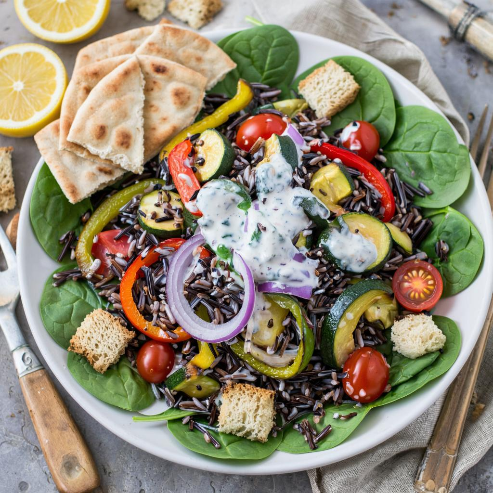

Wild Rice Salad with Roasted Vegetables and Lemon-Tahini Dressing

For the Salad
- 3/4 cup (125g) wild rice
-
6 cups (750g) peeled and cubed root vegetables; any mix of carrots,
parsnip, celery root, beets, and butternut squash, or other favorites
- Olive oil
- Sea salt and black pepper
- 2 spring onions or green onions, minced
-
1/2 cup (15g) chopped fresh parsley and chives, (or other favourite
herbs)
For the Lemon-Tahini Dressing
- 1/4 cup (80g) tahini
- 1 tablespoon fresh squeezed lemon juice
- 3 tablespoons water
- 1 clove garlic, peeled and minced
- 1 teaspoon soy sauce
-
Put the wild rice in a saucepan and cover with plenty of salted water.
Bring to a boil, then reduce the heat to a gentle boil and cook the rice
until it’s tender, about 45 minutes.
-
While the rice is cooking, preheat the oven to 375ºF (190ºC). Drizzle a
few spoonfuls of olive oil on a rimmed baking sheet. Spread the cubed
vegetables over the pan and season well with salt and freshly ground
pepper.
-
Toss the vegetables with the olive and spread them on the baking sheet
in an even layer. Bake for 30 to 45 minutes, stirring once or twice
during cooking, until the vegetables are fully cooked.
-
When the rice is done, drain it well and toss it in a large bowl with
the cooked vegetables and let cool to room temperature. Once cool, stir
in the onions and herbs.
-
Make the lemon-tahini dressing by stirring together the tahini, lemon
juice, water, garlic, and soy sauce, then pour it over the salad and
stir it in well. Taste, and add a bit more salt and lemon juice, if
desired.
Notes
Serving and Storage: This salad is best enjoyed at room
temperature; when chilled, it tends to dry out a bit because of the
tahini. If you wish to make it in advance, best to make the dressing and
the vegetable & rice mixture separately, then stir them together before
you serve it.
Tahini is a paste made of ground sesame seeds and can be found in
well-stocked grocery stores, natural food shops, and Middle Eastern
markets. It’s also available online at places such as Amazon and
Kalustyan’s.
BACK